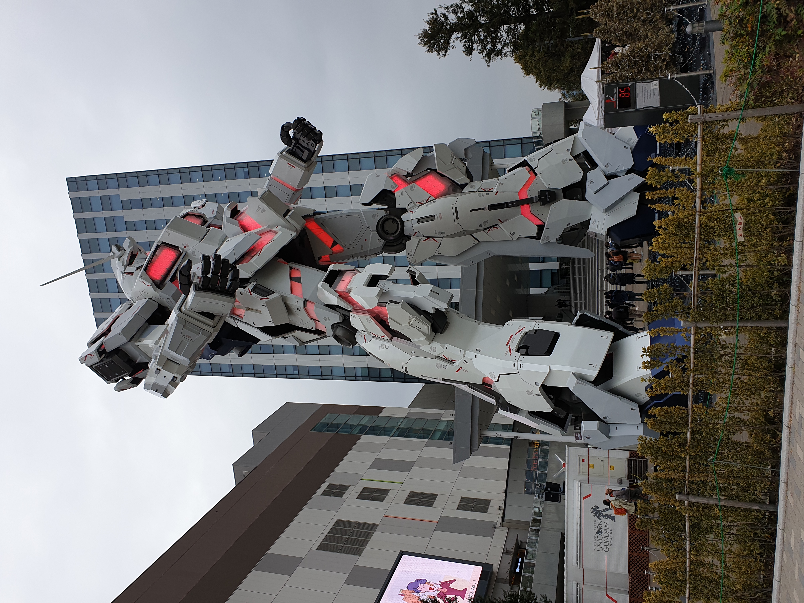

러스틱 라이프 시작하기
첫번째 문단에 들어갈 내용을 작성 : 러스틱 라이프란 날 것의 자연과 시골 고유의 매력을 즐기며 생활에 여유와 편안함을 부여하는 시골을 지향하는 라이프스타일을 말합니다.
위 사진은 2019년 오다이바에서 직접 촬영한 건담 1:1 스케일 피규어 사진입니다. 내용과 관계없음
자연과 호흡하며 날것 그대로 생활한다
「트렌드코리아 2022」에서도 소개된 러스틱이란 단어는 ‘투박한’, ‘시골풍의’란 뜻을 갖고 있으며 말 그대로 자연과 호흡하며 도시화되지 않은 날 것 그대로를 지향한다는 의미를 담고 있다. 특히 코로나19가 이같은 생활 트렌드를 촉발하는 시발점이 됐는데 공해로 찌든 도시에서 벗어나 한적한 시골 생활을 즐기며 단순히 여행에서 그치지 않고, 시골에 자리잡으며 농사나 집짓기 등 여러 가지 경험을 해본다는 데 의의가 있다. 러스틱라이프는 4단계로 이루어져 있다. 일단 첫 번째는 시골로 여행을 가는 일이다. 즉 시골에서만 느낄 수 있는 경험을 찾기 위해 떠나는 것으로 제일 먼저 고려해야 하는 것은 시골에서 무슨 체험을 할 것인가에 있다. 또한 그에 맞는 특정 장소와 방문 기간을 정해야 한다. 특정 장소의 경우 고택을 체험할 수도 있고 그밖에 문화, 역사유적지 방문 등 다양한 야외 활동을 경험할 수도 있다. 그러나 유념할 것은 스마트폰에 의지해 너무 많은 정보를 수집하는 일은 피해야 한다. 잠시 충전을 위해 로그아웃하는 마음자세가 필요하다. 단순히 시골을 방문하는 것과 시골을 완전히 경험하는 것은 차이가 있다. 따라서 단순히 쾌적한 숙소나 침대, 아침식사, 경치에 감탄하고 평화와 고요를 즐기고 싶을 수도 있지만, 러스틱 라이프는 보다 뼛속 깊이 시골생활을 체험할 것을 권고한다. 두 번째는 시골에서 일상 보내기이다. 단기간 시골에 머무르는 것이 아쉽다면 기간을 좀 더 길게 할 수도 있다. 한달살기 혹은 보름살기, 일주일 살기로 결정을 했다면 일단 버킷리스트를 짜봐야 한다. 시골에서 하는 일과는 조깅이나 운동을 하기 위해 일찍 일어날 수도 있고, 가축이나 애완동물을 돌보고 짧은 기간 농사를 짓는다든가 그림을 그리는 데 시간을 보낼 수도 있다. 코로나19 발생 전에는 주로 해외로 여행을 가곤 했지만 이후 국내로 시선을 돌리며 남해, 양양, 속초 등의 지역에 관심을 가지는 경우가 많다. 최근 농림축산식품부에서는 ‘소규모 농촌체험프로그램 개발 지원사업’ 지원 대상마을 100개소를 최종 선정했다. 이 사업은 코로나19 이후 침체된 농촌관광 회복을 위해 소규모·개별화되는 관광 유행에 맞춰 올해 처음 진행되는 사업으로, 선정된 농촌체험휴양마을에는 소규모 농촌체험 프로그램 개발·시범운영, 홍보·마케팅, 마을사업 관계자 역량강화 교육 등을 위해 연간 총 18억 원을 지원한다. 또한 농촌관광 전문가와 마을을 1:1로 연결하여 최대 8회 이상 전문 자문을 실시, 개별 관광객 대상 체험프로그램이 효과적으로 운영할 수 있도록 지원할 예정에 있어 국가적 차원에서 전원생활을 장려하고 있다. 세 번째는 방문하는 휴가에서 머무르는 여가생활에 있다. 사람들은 단순히 여행지에서 숙소를 정하는 데 그치지 않고, 아예 거점공간을 만들어 주거지를 형성할 수 있다. 경제적인 여유가 있을 경우 전원주택단지에 별장을 마련할 수 있으며 휴양지 근처의 아파트나 오피스텔에 주거공간을 가질 수 있다. 그밖에 차박이나 캠핑 등 여러 가지 대안이 가능하다. 네 번째는 마지막 단계로 자신만의 러스틱 라이프를 생각하며 삶을 개척해내는 데 있다. 특히 요즘 들어 청년층이 시골에 머무르기 원하는 사례가 많아지며 풍경을 변화시키고 있는데 쇠퇴한 느낌의 시골에 트렌디한 공간 꾸미기를 통해 감성을 일깨우는 장소로 변모하는 사례가 늘고 있다. 또한 아예 먹거리를 직접 가꾸는 ‘텃밭 만들기’를 통해 로컬푸드 생산까지 그 영역이 확장되고 있다. 최근 세계 인구가 2050년까지 90억 명 이상에 이를 것으로 예상되는 가운데, 식량 생산과 재고를 늘려야 할 필요성이 지속적으로 제기되고 있다. 특히 식량안보가 전 세계 국가의 첨예한 관심사가 되고 있는 요즘 식량 불안과 기근을 피하기 위해 다양한 대응 전략에 의지하는 상황에 있다. 최근 몇 년간 세계 식량 쇼크와 식량 가격 변동의 부작용을 완화하기 위해 국내 식량 생산을 강화하고 강화하려는 관심이 높아지고 있는 가운데 이같은 ‘홈가드닝’은 더욱 활성화될 것으로 보인다.